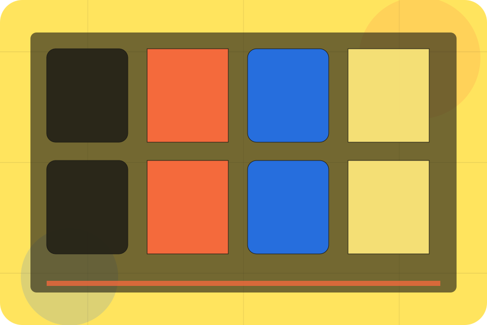

Hiring / 01
Hiring by Talent
Hiring shaped for recruitment, hr & workplace services decisions.
Hiring opens as a clear recruitment decision hub: what Talent offers, who it helps, why it matters, and which route to take first.
The first screen combines positioning, proof, primary action, and fast internal navigation, so people can act immediately or compare the rest of the hiring route with context.
Recruitment scopeCompare optionsRequest advice
Yellow job magazine hero
Choose the audience
Select the closest route and Talent keeps the next step, proof, and follow-up expectation aligned with matching confidence for two audiences.

Hiring / 02
Need: what to solve
Need frames the pressure behind the visit, then connects it to a practical path visitors can recognise and act on.
The copy avoids blame and panic. It shows the common friction, the practical consequence, and the calmer route Talent uses to move people forward.
Explore HiringPressure
Need names the real friction visitors bring to the hiring route, so the page feels relevant before any claim is made.
Consequence
The copy connects that friction to practical risk, delay, confusion, or missed opportunity without exaggerating it.
Safer Step
The final cue moves visitors toward a clearer route instead of leaving them with the problem alone.
Hiring / 03
Brief inside hiring
Brief adds professional context to the hiring route, using the editorial talent marketplace structure to support matching confidence for two audiences before visitors choose a next step.
Talent uses job story cards and focused copy to make the decision easier to scan, aligning the section with matching confidence for two audiences rather than filling space.
Explore HiringContext
Brief gives the page a specific angle instead of repeating the navigation label.
Judgment
The job story cards show what to compare, what to avoid, and what matters most for recruitment, hr & workplace services visitors.
Direction
The final cue points to a useful internal route so the section keeps the journey moving.
Hiring / 04
Search inside hiring
Search adds professional context to the hiring route, using the editorial talent marketplace structure to support matching confidence for two audiences before visitors choose a next step.
Talent uses job story cards and focused copy to make the decision easier to scan, aligning the section with matching confidence for two audiences rather than filling space.
Explore HiringContext
Search gives the page a specific angle instead of repeating the navigation label.
Judgment
The job story cards show what to compare, what to avoid, and what matters most for recruitment, hr & workplace services visitors.
Direction
The final cue points to a useful internal route so the section keeps the journey moving.
Hiring / 05
Screening inside hiring
Screening adds professional context to the hiring route, using the editorial talent marketplace structure to support matching confidence for two audiences before visitors choose a next step.
Talent uses job story cards and focused copy to make the decision easier to scan, aligning the section with matching confidence for two audiences rather than filling space.
Explore HiringContext
Screening gives the page a specific angle instead of repeating the navigation label.
Judgment
The job story cards show what to compare, what to avoid, and what matters most for recruitment, hr & workplace services visitors.
Direction
The final cue points to a useful internal route so the section keeps the journey moving.
Hiring / 06
Shortlist inside hiring
Shortlist adds professional context to the hiring route, using the editorial talent marketplace structure to support matching confidence for two audiences before visitors choose a next step.
Talent uses job story cards and focused copy to make the decision easier to scan, aligning the section with matching confidence for two audiences rather than filling space.
Explore HiringContext
Shortlist gives the page a specific angle instead of repeating the navigation label.
Judgment
The job story cards show what to compare, what to avoid, and what matters most for recruitment, hr & workplace services visitors.
Direction
The final cue points to a useful internal route so the section keeps the journey moving.
Hiring / 07
Interviews inside hiring
Interviews adds professional context to the hiring route, using the editorial talent marketplace structure to support matching confidence for two audiences before visitors choose a next step.
Talent uses job story cards and focused copy to make the decision easier to scan, aligning the section with matching confidence for two audiences rather than filling space.
Explore HiringContext
Interviews gives the page a specific angle instead of repeating the navigation label.
Judgment
The job story cards show what to compare, what to avoid, and what matters most for recruitment, hr & workplace services visitors.
Direction
The final cue points to a useful internal route so the section keeps the journey moving.
Hiring / 08
Offers: the better state
Offers defines the better state Talent is built to create, with enough detail to make the promise believable.
A recruitment magazine site with candidate/employer split, bold editorial cards, people proof, and upload routes. The section grounds that direction in concrete benefits, visible tradeoffs, and a next route visitors can use when the promise feels relevant.
Explore HiringBetter State
Offers defines what becomes clearer, easier, or safer when Talent is the chosen route.
Practical Gain
The benefit is tied to matching confidence for two audiences, not a vague quality claim.
Proof Route
Visitors get a linked path to compare the promise against services, standards, or examples.
Hiring / 09
Onboarding inside hiring
Onboarding adds professional context to the hiring route, using the editorial talent marketplace structure to support matching confidence for two audiences before visitors choose a next step.
Talent uses job story cards and focused copy to make the decision easier to scan, aligning the section with matching confidence for two audiences rather than filling space.
Explore HiringContext
Onboarding gives the page a specific angle instead of repeating the navigation label.
Judgment
The job story cards show what to compare, what to avoid, and what matters most for recruitment, hr & workplace services visitors.
Direction
The final cue points to a useful internal route so the section keeps the journey moving.
Hiring / 10
Start Hiring
Talent closes the hiring route with a clear action, a quick reminder of the value, and a low-friction way to start hiring.
Visitors who are ready can use the primary action. Visitors who are still comparing can scan the section links, proof, and support routes before they start hiring.
Start HiringThe final block keeps the choice simple: act now, compare one more proof route, or send enough detail for a focused response.
Start Hiringmatching confidence for two audiences
Start Hiring
A recruitment magazine site with candidate/employer split, bold editorial cards, people proof, and upload routes. Hiring ends with a direct path to start hiring, plus enough context for visitors who still need to compare.